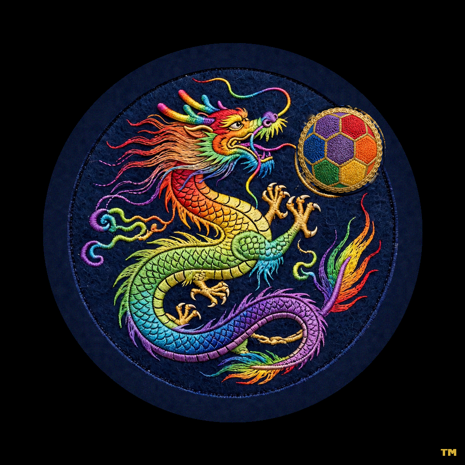

Los Angeles Orange County Irvine Great Park
sports recovery and soccer-themed luxury resort club (in preparation)
運動即生活方式 · 恢復是剛需 · 足球是場景
主題是體驗 · 渡假是享受 · 俱樂部是新品類
Sport is a lifestyle · Recovery is an essential need · Soccer is the scene
Theme is the experience · Resort is enjoyment · Club is a new category
讓長期、規律、科學的運動成為自我提升的生活方式。
Making long-term, regular, scientific sport a lifestyle built on self-improvement.
聯繫流程 Contact path：來信 → 簽 NDA → 一到兩小時詳談
Write in → Sign NDA → One-to-two-hour conversation
info@OC100MARATHONCLUB.com
www.oc100marathonclub.com/investors.html